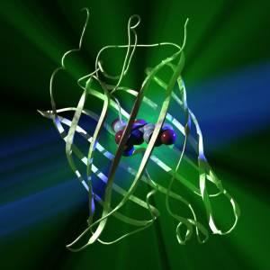
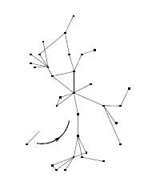
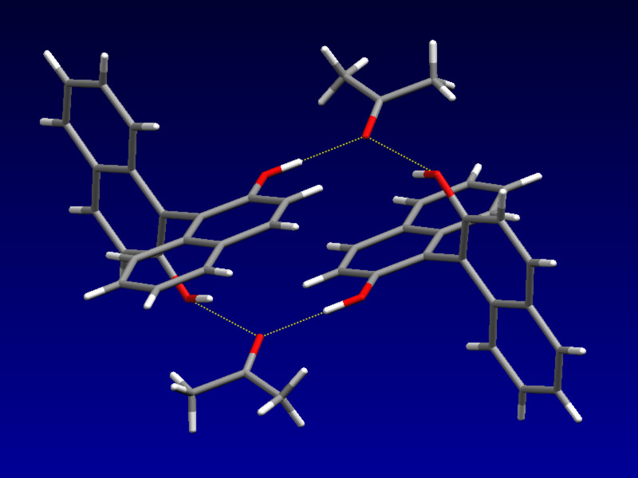
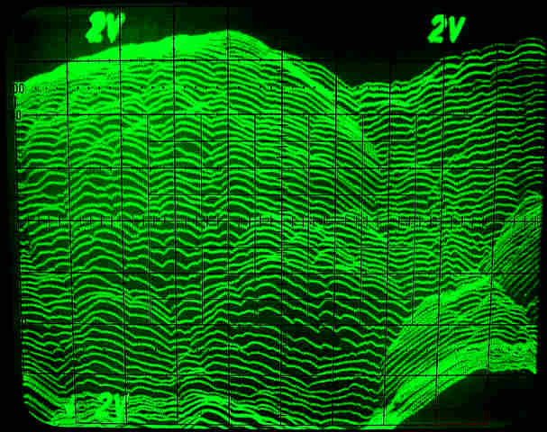
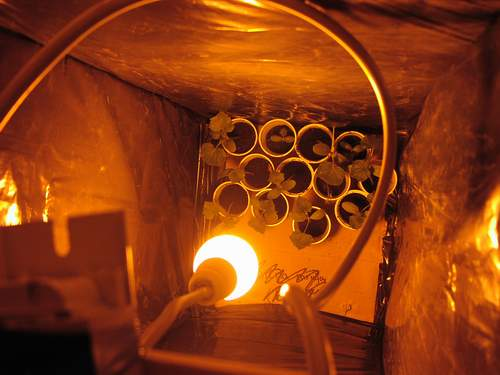

The aim of the project is teaching basic molecular biology concepts and techniques. Gene expression and protein purification are visualized using green fluorescent protein (GFP) from jellyfish Aequoria victoria, which has become an invaluable tool in contemporary biological research, because its bright intrinsic fluorescence. The relationship between the genome and proteome is further extended in individual theoretical and bioinformatics projects. State-of-the-art experimental methodology is accompanied with lectures and discussions and scientific communication skills are introduced through designing posters and presentations.
Martina Mijuskovic
Swiss Federal Institute of Technology (ETH), Zurich, Switzerland
Danijel Dojcinovic
The Scripps Research Institute, La Jolla, USA
Danijel holds an MS in molecular and cellular biology from Arizona State University, USA. His field of research is interorganellar communication in Arabidopsis thaliana.
Martina is a doctoral student at the Institute for Molecular Biology and Biophysics, ETH Zurich, Switzerland. Her research field is crystallography of general transcription factor protein-DNA complexes. She is a teaching assistant in several molecular biology courses at the Instutute.
The principal goal of the project is familiarizing students with the basic concepts and models of complex networks. Special emphasis is put on the description of complex networks appearing in nature and society, such as Internet. Theoretical models which successfully explain some of the features of real complex networks are introduced. The model of preferential attachment of Barabási and Albert, along with some of its elaborations, is studied in particular. The main results of theoretical models are verified in numerical simulations of the network growth.
Students are guided in developing the understanding of models of network growth and in adopting skills required in performing numerical simulations. In a brainstorming session, possibilities of more advanced and realistic simulation models are considered.
Hrvoje Stefancic
Rudjer Boskovic Institute, Zagreb, Croatia
Hrvoje is a postdoctoral research assistant at the Theoretical Physics Division, Rudjer Boskovic Institute. He holds a Ph. D. in high energy theoretical physics. His other fields of research comprise cosmology and astroparticle physics and recently, modelling of complex networks. His permanent area of interest is the application of tools and methods of theoretical physics in quantitative description of complex phenomena in economics, social sciences and biology.
Of all directional intermolecular interactions, the hydrogen bond is the most important. Its importance in many systems, from simple chemical to the most complex biochemical multienzime complexes, arouses vital scientific interest for more than 50 years. In recent years in particular, hydrogen-bond research has strongly expanded in depth as well as in breadth, new concepts have been established, and the complexity of the phenomena considered has increased dramatically.
The goal of this project is to introduce students to the basic concepts of the formation and vibrational properties of the intermolecular complexes with weak hydrogen bonds. The systems which will be considered include 1,1'-bi-2-naphthol as an example of proton-donor, and, as a proton-accepting compounds, N,N-dimethylformamide and m-dinitrobenzene in several solvents from polar to nonpolar. From the previously acquired infrared spectra, the formation constants and basic thermodynamic properties will be determined. Also, analysis of the spectra will give a look into the structural details of the complexes. Last but not the least, complexes will be crystalised to obtain monocrystals good enough to carry out x-ray difractional structural analysis.
In such a way, students will be introduced to molecular vibrational spectroscopy, to «mechanical» properties of the molecules and weak intermolecular forces, and also to basic properties of solutions. Methodology of the spectral analysis and experimental techniques will be accompanied with lectures and discussions.
Nikola Biliskov
Rudjer Boskovic Insitute, Zagreb, Croatia
Nikola is a PhD student of chemistry at the Laboratory of Molecular Spectroscopy, Division of Organic Chemistry and Biochemistry, Ruðer Boškoviæ Institute in Zagreb, Croatia. His other interests comprise chemistry of the atmosphere, geochemistry and, particularly, meteor astronomy. He was leader of the meteor groups of the Višnjan School of Astronomy. He participated in expedition that observed Leonid meteor storm in Mongolia in 1998.
The Scanning Tunneling Microscope (STM) has become one of the most useful tools for surface imaging at the atomic level and atomic manipulation.
The goal of the group is to build a simple, fully functional scanning tunneling microscope and image a number of surfaces with it. Through this proces the participants will learn the theoretical background of the STM functioning, the specifics of the mechanical design, the why and the how of the electric circuits and the operational techniques.
The participants will learn skills connected with the building of a scientific instrument like metal craftwork, electronic circuit assembly and function testing. Beside these skills the participants will also learn how to present their work to the scientific community and how to create an Internet webpage.
Ivica Crljenica
Faculty of Science, University of Zagreb, Croatia
Ivica is a second year physics student at the Faculty of Science, University of Zagreb. His fields of interest encompases light pollution, education, instrument building . . .
Light pollution was considered as astronomical issue for many years. There is much evidence that artificial night lights have some influence on night animals. The aim of the project is to compare impact the different types of street lamps have on animals, particularly insects. Impact of street lamps will be measured also through pray-predator relationships.
Even the little children know that the moths are attracted to lamps, but the top leptidopterologists (scientists who are studying butterflies and moths) cannot find universal answer to question WHY? Can we do it?
Zrinka Mesic
Zumberak-Samoborsko gorje Nature Park, Croatia
Zrinka is a guide and environmental educator in Žumberak-Samoborsko gorje Nature Park. She is postgraduate student at the Faculty of Science, University of Zagreb. Her main interest is implementation of GIS technologies in conservation biology.
One of the top challenges in astrophysics today is direct imaging of extra-solar planets. Direct imaging of extra-solar planets is highly desirable because one could separate the light from the star and the planet. However, such imaging is difficult. The most prominent is very wide dynamic range of the light intensities from the stars. To achieve that range participants of this group will try some of new techinics of data reduction on original VLT (Very Large Telescope-ESO) images. With the indirect method (Radial velocity) planet's wobbling around the parent star is measured. This has led to the discovery of about 110 planets in our galaxy. Another goal of this project will be to determine which of those known planets are in or close to place around the star where life could develop - in so-called Habitable zone.
Participants will be expected to learn how to search scientific databases, form the goal of their research, do basic data reduction of astronomical images, make conclusions and present their work to public. The planet hunting season will yield exciting results soon.
Ana Bedalov
Astrophysical Institute and University Observatory, Friedrich-Schiller-University Jena, Germany
Ana is PhD student in astrophysics at Observatory of University of Jena in Germany. She works on extra-solar planet and brown dwarfs search. Her other interests are education and popularization of science. She organised S3 2002 and S3 2003 and now she is leader of educational project Nebo na poklon. Her hobbies are photography, cooking and traveling.
Lectures covered topics from current frontiers of science.
Marko Kralj (Institute for Physical and Theoretical Chemistry, University of Bonn, Germany): Imaging and manipulation on the atomic level with scanning probe techniques
Goran Zgrablic (Swiss Federal Institute of Technology, Lausanne, Switzerland): Taking movies of molecules in action using ultrafast laser spectroscopy
Danijel Dojcinovic (Arizona State University, Tempe, USA): GM food: please don't panic
Dejan Vinkovic (Institute for Advanced Study, Princeton, USA): A prelude to planet formation: what do we know about the environments where planets are born
Ana Bedalov (Astrophysical Institute and University Observatory, Friedrich-Schiller-University Jena, Germany): Planets Hunting Season
Jasminka Cindric (Pliva Research Institute, Zagreb, Croatia): Sciences in drug development (from a molecule to a drug
Workshops covered other topics:
Branimir Lukic (Swiss Federal Institute of Technology, Lausanne, Switzerland): Imaging and manipulation on the atomic level with scanning probe techniques
Marija Lukic (Economics High School, Pozega, Croatia): Team-cooperative learning in the class: Croatian kingdom in the tenth century